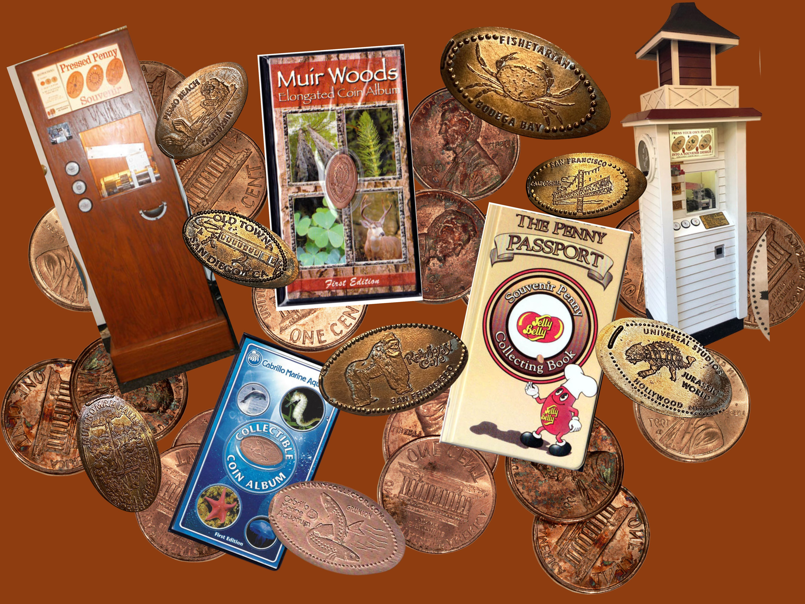

Our Story
The Museum of the Elongated Coin (MEC) was founded in 2026 by Sophie Whitman, a casual pressed penny collector. Sophie believes that pressed pennies are important keepsakes that hold memories for their owners, and this belief is translated into everything the MEC does. Not only are they special, but they are affordable, compact, and eco-concious as well. At the MEC, we acknowledge that pressed pennies and pressed penny machines ar ebecoming less common, and machines are being removed from locations across the country. The MEC works to collect these machines when they are scheduled to be removed to keep them out of landfill and maintain their mechanics until they can one day be returned to their original location. Pressed Pennies are wonderful and everyone should have the opportunity to enjoy them!
Museum Information
Entry is valid all day and each admission ticket gets you four pressed penny museum tokens to use around the museum. We invite visitors to take photos around the museum, interact with exhibits and galleries, and enjoy everything the MEC has to offer! Please keep an eye out for MEC employees who are always happy to answer any and all questions, or just chat about elongated coins! If you have any questions regarding admission or other inquiries, please email us.
